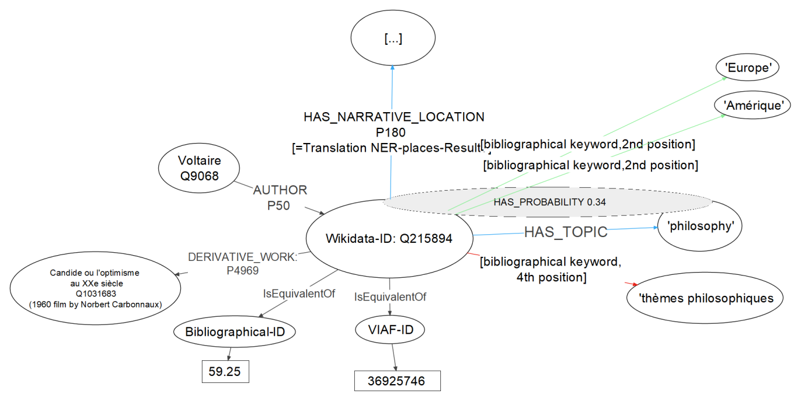

# Modeling Literary History / Historiography <img height="80" data-src="img/basics/mimotext-logo.png"> <br/> <hr/> <p>Christof Schöch & Maria Hinzmann,<br/>with contributions from Julia Röttgermann, Katharina Dietz and Anne Klee</p> <p><strong><emph>Computational Modeling</emph> | Trier University | June 24, 2020</strong></p> <hr/> <br/> <img height="55" data-src="img/basics/tcdh-slim.png"> <img height="55" data-src="img/basics/uni-trier.png"> -- ## Overview 1. Modeling in Digital Humanities 2. Introduction to 'Mining and Modeling Text' 3. Modeling Literary History 4. Modeling Literary Historiography 5. A network of information -- ## (1) Modeling in Digital Humanities --- #### Willard McCarty, *Humanities Computing*, 2004 <img height="250" data-src="img/mccarty.jpg"> >"The residue of uniqueness" >modeling as an iterative, knowledge-producing process --- #### Jannidis & Flanders, *The Shape of Data in DH*, 2019 <img height="250" data-src="img/flanders-jannidis.jpg"> >"The term 'data modeling' in computer science is most typically used in a fairly restrictive sense for the modeling of relational databases, while the digital humanities has a more general understanding of the term: data modeling is the modeling of some segment of the world in such a way to make some aspects computable." --- #### Computational Modeling in DH * Data Modeling <!-- .element: class="fragment" data-fragment-index="1" --> * Conceptual Modeling: entities and relations<br/>(taxonomies, ontologies, vocabularies) <!-- .element: class="fragment" data-fragment-index="2" --> * Logical Modeling: data structures<br/>(e.g. in XML-TEI, RDF) <!-- .element: class="fragment" data-fragment-index="3" --> * Statistical Modeling <!-- .element: class="fragment" data-fragment-index="4" --> * Detecting trends and patterns (e.g. Topic Modeling, Linear Regression, Keyness etc.) <!-- .element: class="fragment" data-fragment-index="4" --> * Language Models <!-- .element: class="fragment" data-fragment-index="5" --> * Properties of Languages encoded in language models (e.g. Word Embedding Models) <!-- .element: class="fragment" data-fragment-index="5" --> --- #### Aims of Literary History * Borkowski & Heine, "Ziele der Literaturgeschichtsschreibung" (2013) <!-- .element: class="fragment" data-fragment-index="1" --> * Two conceptions <!-- .element: class="fragment" data-fragment-index="2" --> * focus on historicizing <!-- .element: class="fragment" data-fragment-index="2" --> * focus on relating to present-day-concerns <!-- .element: class="fragment" data-fragment-index="2" --> * Aims of the historicizing conception <!-- .element: class="fragment" data-fragment-index="3" --> * reconstruction: establishing true or probable propositions about literature <!-- .element: class="fragment" data-fragment-index="3" --> * consolidation: collecting and disseminating the substantiated scholarly record <!-- .element: class="fragment" data-fragment-index="3" --> -- ## (2) Introduction to<br/>'Mining and Modeling Text' --- #### MiMoText: overview <a href="img/mimotext-overview.png"><img height="500" data-src="img/mimotext-overview.png"></a> -- ## (3) Modeling Literary History <br/> * (aim: reconstruction) --- ### (A) Topic Modeling Novels * Corpus design and text encoding <!-- .element: class="fragment" data-fragment-index="1" --> * Topic Modeling <!-- .element: class="fragment" data-fragment-index="2" --> * Modeling results as Linked Open Data <!-- .element: class="fragment" data-fragment-index="3" --> --- #### Building a Corpus * Aim: 200 volumes of novels (1750-1800) <!-- .element: class="fragment" data-fragment-index="1" --> * Sources: double keying, OCR, portals <!-- .element: class="fragment" data-fragment-index="2" --> * Corpus composition: decades and narrative forms <!-- .element: class="fragment" data-fragment-index="3" --> * Current pilot corpus: ca. 80 volumes <!-- .element: class="fragment" data-fragment-index="4" --> * Text encoding <!-- .element: class="fragment" data-fragment-index="5" --> * Files are encoded in XML-TEI <!-- .element: class="fragment" data-fragment-index="6" --> * Modeled following the ELTeC schema <!-- .element: class="fragment" data-fragment-index="7" --> --- #### Topic Modeling <a href="img/tm_blei.png"><img height="500" src="img/tm_blei.png"></img></a> --- #### First results <a href="img/pilot_mod200_fr_10_500_expStop.html"><img height="500" src="img/pyldavis.png"></img></a> --- #### Modeling als LOD * HAS_TOPIC (with threshold for inclusion and probability) * Candide HAS_TOPIC 'philosophy' <!-- .element: class="fragment" data-fragment-index="1" --> * {Candide HAS_TOPIC 'philosophy'} HAS_PROBABILITY 0.34 <!-- .element: class="fragment" data-fragment-index="1" --> * Integration into the database of statements <!-- .element: class="fragment" data-fragment-index="2" --> --- ### (B) Named Entity Recognition -- ## (4) Modeling Literary Historiography <br/> * (aim: consolidation + reflexion) --- ### (A) Extracting Statements * Define annotation layer with statement types * Manually annotate examples of statements * Learn to automatically identify instances --- #### INCEPTION --- ### (B) Modeling Historiograohy * Which types of statements are necessary? * What relations to these types have? * How do we create consensus? * Meta-perspective on disciplinary discourse -- ## (5) A network of information --- #### Example entry: Candide <a href="img/bgrf-Candide.png"><img height="500" src="img/bgrf-Candide.png"></img></a> --- ### Bibliography and Novels * The 'Bibliographie du genre romanesque' contains information on setting and theme/tone <!-- .element: class="fragment" data-fragment-index="1" --> * The 'novel analysis' extracts place names and topics <!-- .element: class="fragment" data-fragment-index="2" --> * Relations <!-- .element: class="fragment" data-fragment-index="3" --> * --- #### Bringing it all together <a href="img/network-of-information.png"></img></a>